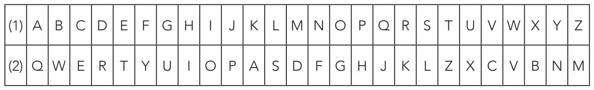
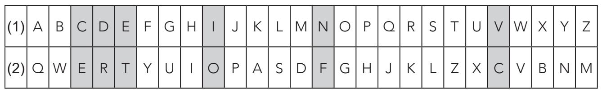
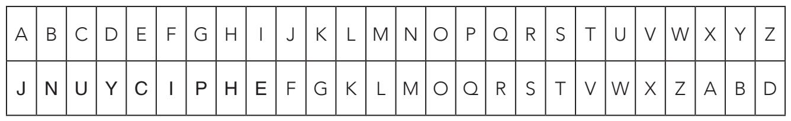
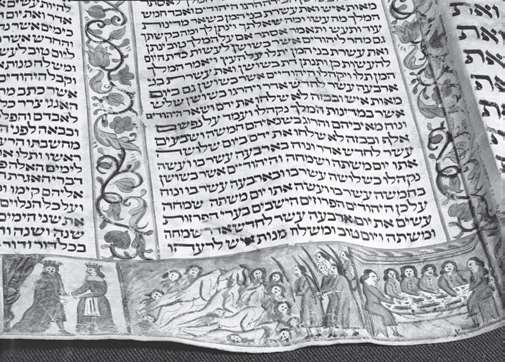

在几百年的时间里，很多信息安全系统都是基于恺撒密码，以及恺撒密码的一般形式仿射密码开发的。今天，凡是将原始信息的每个字母由另一个相距一定位次的字母代替（不一定非得是3个）的加密方式，都被称作恺撒密码。
一个好的加密算法，最大的优点之一就是能够产生大量的密钥。无论是恺撒密码还是仿射密码，在密码分析面前都很脆弱，因为两者的最大密钥数都很低。
如果我们对加密字母表的字母顺序不设任何限制的话，密钥数就会大规模增加。含有26个字母（顺序不限）的标准字母表，可用的密钥数为26!=403 291 461 126 605 635 584 000 000，也就是403×1024个密钥。假如破译者每秒钟破译一个密钥，那也要穷尽宇宙生命总长度的10亿倍才能把所有的密钥破译完。
常见的替换算法，密码如下：

（1）明文字母表；（2）加密字母表。
加密字母表的顺序，从前6个字母中可见端倪：QWERTY，它与标准电脑键盘上的字母顺序相对应。用QWERTY加密恺撒的那句名言“VENI VIDI VICI”（“我来，我见，我征服”）时，可在对应的加密字母表中找出对应字母，如下所示：

加密后即为：
CTFO CORO COEO
这种方法能够产生几乎无穷尽的密码，要想轻松记住，倒是有个简单方法。收发双方只要商定好“密钥单词”（也可能是个词组）就够了：把密钥单词置于加密字母表的前头，然后把它的最后一个字母作为起始点，后面按照常规字母表顺序将加密字母表补充完整，注意任何字母都不要出现重复。以“JANUARY CIPHER”（一月密码）为例。首先我们去掉空格和重复字母，得到密钥单词“JNUYCIPHE”。那么加密字母表就如下表所示：

信息“VENI VIDI VICI”加密后为“XCME XEYEXEUE”。使用这种代码生成系统加密，收发双方都不容易出错，而且易于更新。在刚才举的这个例子中，一个月更换一次代码足矣。从JANUARY CIPHER（一月密码）到FEBRUARYCIPHER（二月密码），再到MARCH CIPHER（三月密码），等等。一旦密码建立，收发双方就用不着再互通密钥了。
密钥单词替换算法稳定可靠，简便易用，几百年来一直是人们的首选加密系统。在那个时代，人们有个普遍的共识，那就是：在加密者和密码破译者之间，加密者占了上风。
加密上帝之语
中世纪的密码破译者认为，他们在《圣经·旧约》中发现了密码，而且他们确实没有搞错。《圣经》中有好几个片段用一种叫作“阿特巴希”（atbash）的替换加密算法加密过。阿特巴希密码就是将字母表中的任意字母（用n表示）替换成n在字母表中位置与之对称的字母。比如，英文字母表中，A由Z代替，B由Y代替，等等。《圣经·旧约》原文用的希伯来字母表进行替换。因此，在《耶利米书》25章26节中，“Babel”（巴别塔）一词加密后为“Sheshakh”（示沙克）。

18世纪初的《希伯来圣经》。